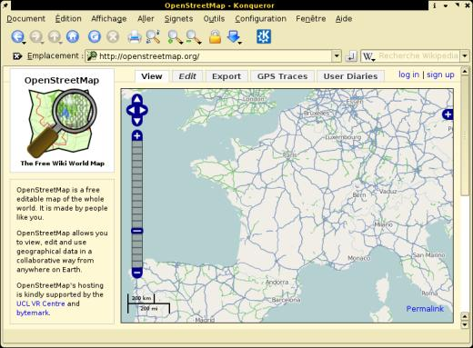
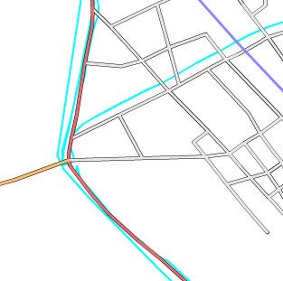
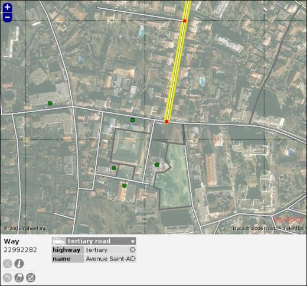
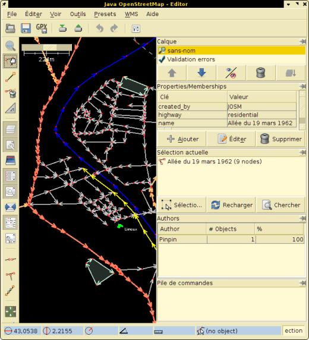
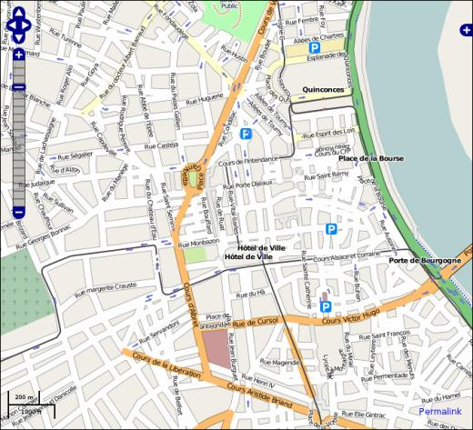
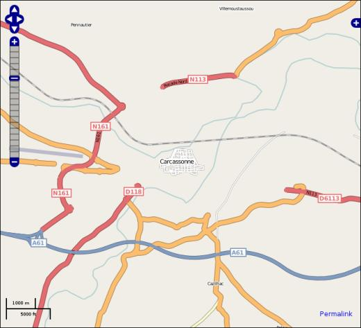

Open Street Map (OSM)
jeudi 8 mai 2008, par freed
Vous en avez assez de geeker derrière votre ordinateur, allez contribuer au libre en faisant le tour du quartier.
Je ne suis probablement pas le mieux placé ici pour parler de géomatique mais je vais quand même le faire. OSM est à la cartographie ce que Wikipedia est à l’encyclopédie.
Origine d’OSM
Le but d’OSM est de fournir des données cartographiques libres. De plus en plus de données géographiques sont consultables gratuitement sur internet, mais la liberté s’arrête souvent là. Dans ce même temps, le nombre de personnes possédant un GPS augmente.
Utilisation
L’avancement du projet et donc la possibilité d’utilisation dépend du pays et de la zone géographique. Les rendus graphiques des données (les cartes, en un mot) sont consultables sur le site d’OSM ( http://openstreetmap.org ). Elles sont redessinées périodiquement avec plusieurs styles différents (cf "+" en haut à droite). Il est aussi possible de les télécharger ainsi que leurs sources (données brutes), de les modifier et les redistribuer bien sûr.
 openstreetmap.org
Par contre, bien que les cartes soit vectorielles, il n’est pas encore tout à fait possible de les utiliser pour faire de la navigation routière assistée. Toutefois des logiciels sont en cours de développement pour différentes plate-formes. Cependant il est possible d’utiliser les cartes avec un ordinateur muni d’un GPS ou même d’embarquer des exportations de carte OSM dans des GPS de marque Garmin. L’univers des GPS d’aide à la navigation est un univers assez fermé où il est même difficile pour l’utilisateur d’importer ses propres cartes dans les appareils, (formats de fichiers tenus secrets).
Sources d’information
Les informations fournies par le projet OSM ont plusieurs origines, dans tous les cas elles sont fusionnées aux autres et éditables par les contributeurs. Les principales sources d’information sont les suivantes.
Relevés d’informations sur le terrain à l’aide de traces GPS pour les différentes voies et zones. Mais ce ne sont pas les seules informations récoltées in situ. Quand on ne dispose pas d’autres sources libres, il faut aller sur place relever les noms de rues, de lieux publics et autre détails.
Yahoo ! autorise l’utilisation de ses vues aériennes pour créer des données dérivées pour OSM. Mais les vues ont des niveaux de détails différents selon que l’on est dans une grande ville, où il est possible de distinguer clairement les rues, ou ailleurs. De plus elles sont parfois décalées ou obsolètes par rapport à la réalité. En ville il est donc possible de décalquer les rues depuis Yahoo ! Ailleurs, il faudra obligatoirement trouver d’autres sources ou aller tracer les rues au GPS.
Pour finir, l’autre grande source de données a pour origine les données du domaine public, cas pour les États-Unis d’Amérique ; ou les données offertes au projet, cas de la Hollande. Mais c’est aussi le cas pour les côtes ou les frontières (difficilement traçables sur le terrain). En France il est actuellement discuté de la possibilité d’utiliser le cadastre en ligne (nouvellement ouvert, www.cadastre.gouv.fr ).
Par contre il n’est pas possible, dans le cas général, d’utiliser des cartes préexistantes car cela constitue un travail dérivé protégé par le copyright.
Contribution
Pour contribuer il n’est pas nécessaire d’avoir un GPS, bien que cela constitue la façon la plus simple et la plus sûre d’acquérir des données libres.
Enregistrer une trace avec un GPS consiste à effectuer un déplacement (avec un moyen de transport quelconque) et de lui faire retenir le parcours. Il faut ensuite importer le tracé dans un ordinateur et le retravailler pour enfin l’intégrer à OSM.
Depuis les vues aériennes de Yahoo ! l’on peut décalquer les voies, ce qui est pratique pour dégrossir le travail avant d’aller sur place ou si l’on n’a pas de GPS.
Des contributions de taille peuvent être effectuées si l’on possède des données libres ou en œuvrant pour de la libération.
Le travail sur le terrain consiste à relever les noms de rues, de lieux publics (écoles, églises...), à constituer des listes de points d’intérêts (bureaux de Poste, stations service...). Lors du trajet il est aussi possible de faire des commentaires sur un dictaphone ou de prendre des photos qui seront ensuite géo-taguées pour être alignées avec la trace du GPS. Une des méthodes avérée efficace est celle de la double passe. Une première pour relever la topologie des rues (avec Yahoo ! ou avec GPS), puis une seconde sur le terrain pour relever entre autres les noms de rues.
 Différentes traces de GPS à Limoux (en bleu) importées sur OSM.
La saisie des données peut être faite directement en ligne via l’application (flash) Potlach qui permet de décalquer depuis des traces GPS ou depuis Yahoo ! et de nommer facilement les voies. Pour une utilisation plus avancée il vaut mieux se tourner vers l’application JOSM (ou Merkaartor).
 L’éditeur en ligne Potlach (centre ville de Caudéran, Bordeaux).  L’éditeur JOSM (centre ville de Limoux).
Les cartes OSM sont basées sur un nombre restreint de concepts très simples. Les nœuds (node) qui représentent des points, les voies (way) qui permettent de relier les nœuds et les relations (relation) qui offrent la possibilité de regrouper ces voies. Ces trois éléments peuvent être tagués. Les tags sont laissés libres au cartographe, il est toutefois recommandé de se reporter à la page du wiki qui en répertorie les usages ( http://wiki.openstreetmap.org/index... ).
Conclusion
La cartographie de la France n’est pas très avancée par rapport au précurseur anglais ou à l’Allemagne, bien que les contributions croissent actuellement de façon exponentielle. Il faut aussi noter que pour des raisons de licence, OSM n’est pas compatible avec le (feu ?) projet français UPCT (Un Point C’est Tout, http://www.upct.org/ ). Il se pose tout de même la question de la qualité des données générées par de telles méthodes. Les erreurs sont inhérentes au principe de wiki, qui donne cependant de bons résultats dans l’ensemble.
 Le centre ville de Bordeaux.  Carcassonne, un peu vide, pas d’images Yahoo ! détaillées.
 Tu as fait quoi hier ?
Tu as fait quoi hier ?
 Une carte du monde, et toi ?
Une carte du monde, et toi ?
- http://openstreetmap.org (en) Le site du projet, et la carte consultable en ligne
- http://wiki.openstreetmap.org (en,fr) Le wiki du projet
- http://wiki.openstreetmap.org/index... (fr) Les conventions de tags
- http://openstreetmap.fr Site de OSM France (ne pas lire le slogan, site en construction)
- http://josm.openstreetmap.de (en) JOSM programme d’édition de carte OSM avec de nombreux plug-ins
- http://www.upct.org (fr) Un Point C’est Tout
- http://www.cadastre.gouv.fr (fr) Cadastre en ligne